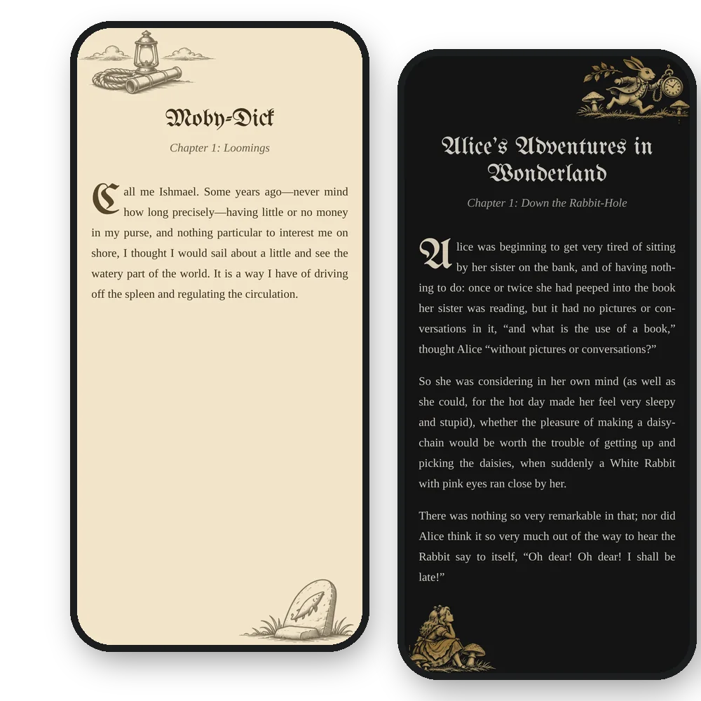
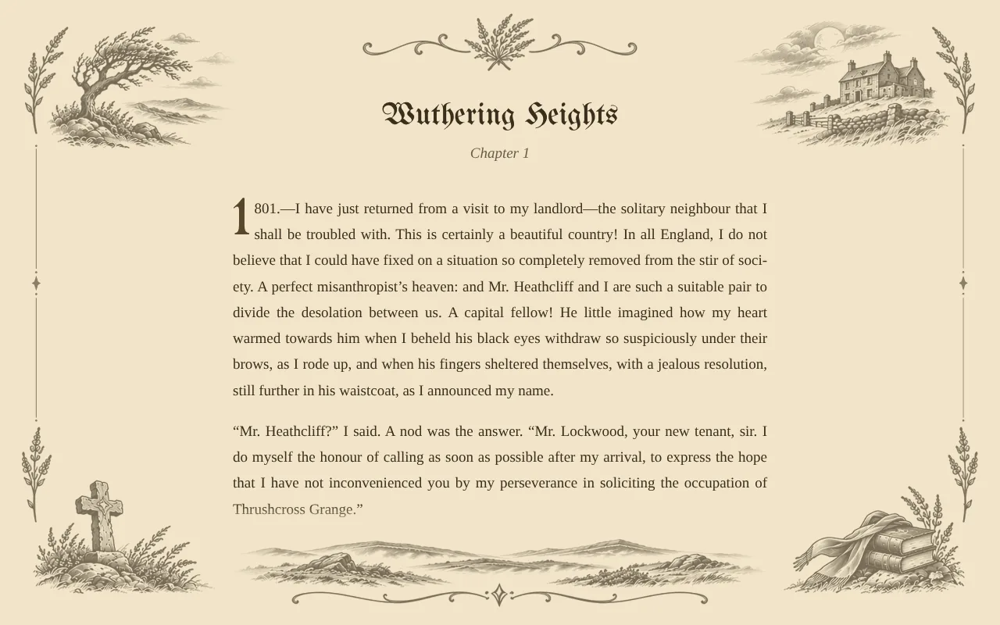
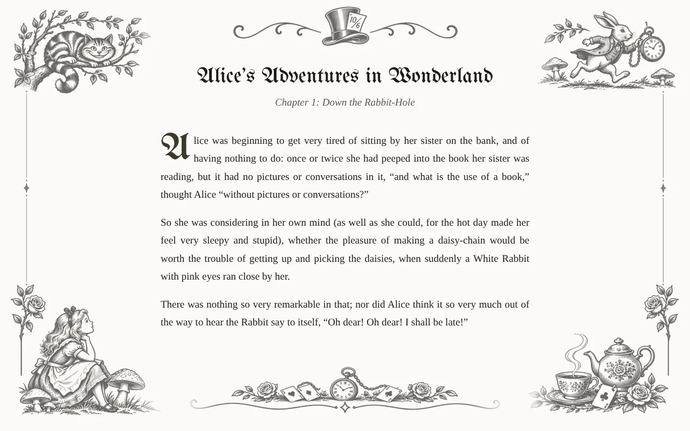
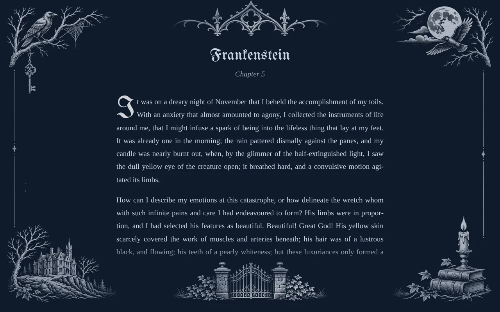
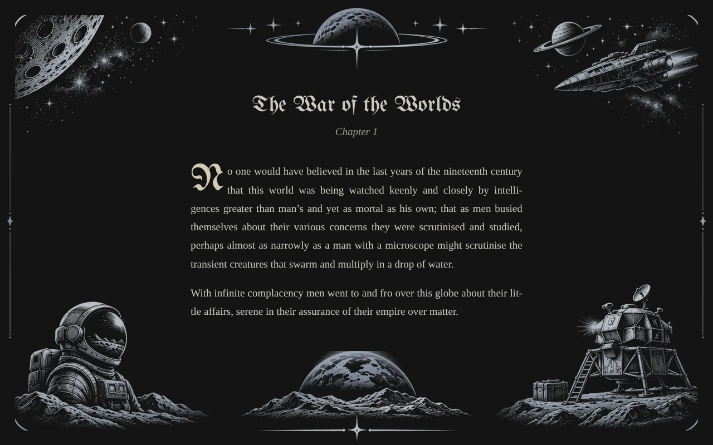
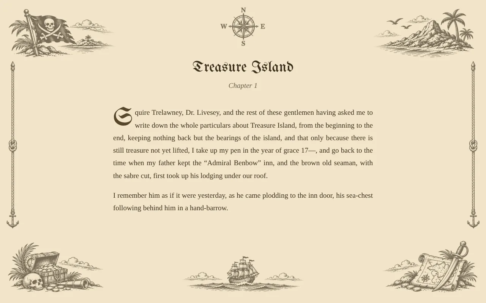

Coming to Velvet Scroll Plus
Story mode: every book in its own world
Hand-drawn illustrations frame the page in the spirit of what you’re reading: windswept moors for Wuthering Heights, the Cheshire Cat and the White Rabbit for Alice, a moonlit manor for a ghost story, a treasure map for a tale of pirates.
- More than 20 themesClassics, the sea and adventure, fantasy, gothic, ancient history, Westerns, science fiction, noir, the Jazz Age and more.
- Drawn for day and nightEngravings on Paper and Sepia, and moonlit, lamplit versions for dark pages, finished like gold or silver foil.
- Made for phones tooOn a phone the scenes take turns, a different corner or ornament each chapter, so the words always have room.
- Matched to each bookA theme is suggested from the book’s genre, and you can choose any other, or none.
The preview shows the themes on a sample page. Change the background, the theme and the drawing there, and on a phone press Next chapter to see the scenes change.





